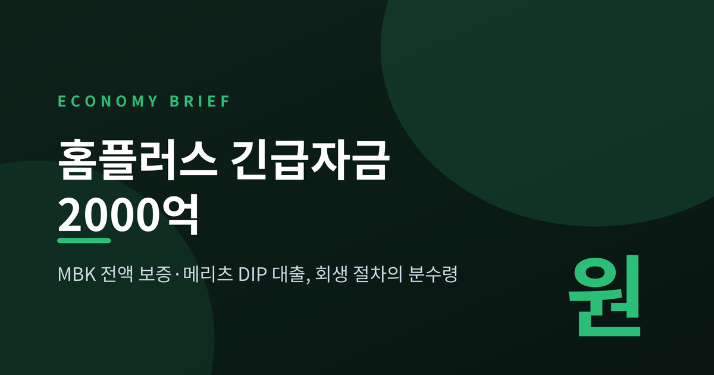
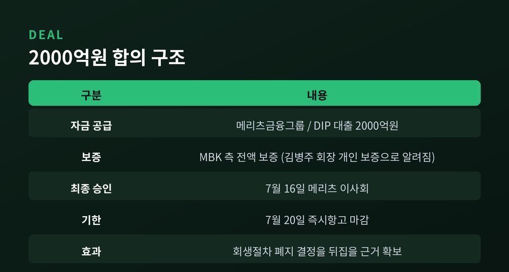
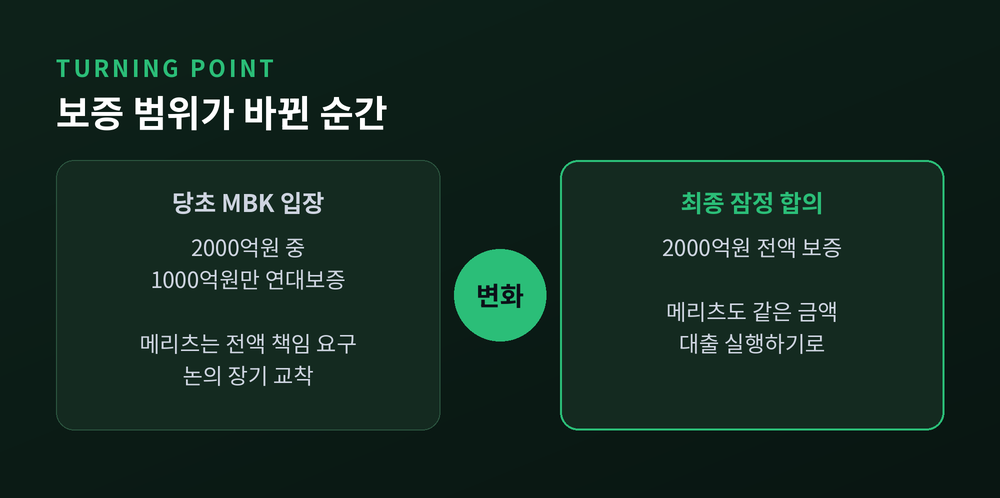
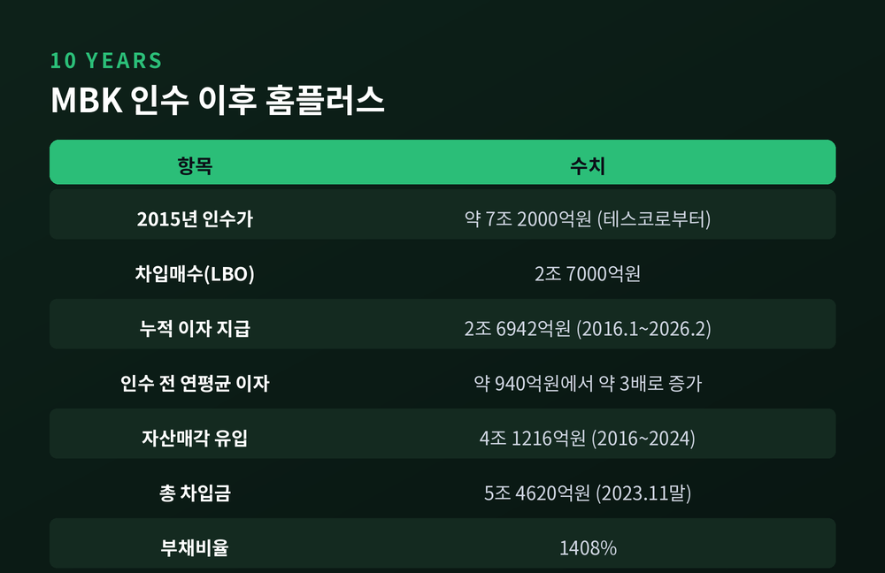
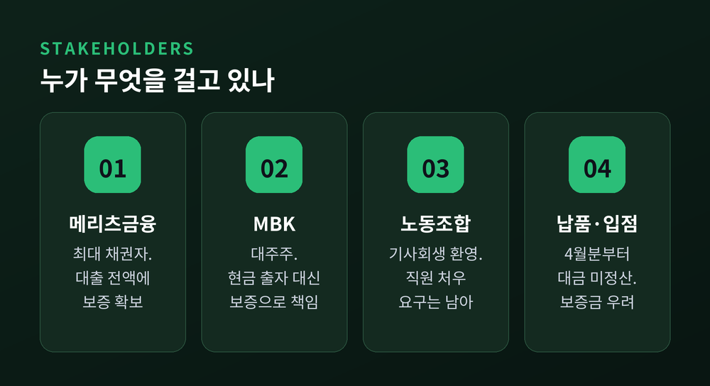
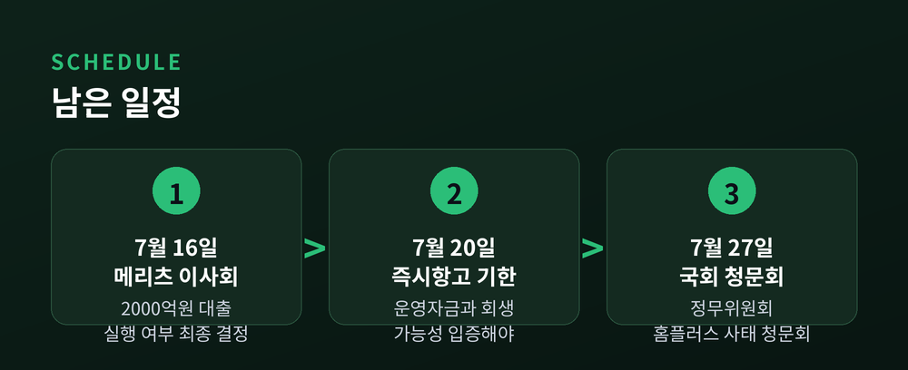

이번 글에서는 2026년 7월 15일 나온 홈플러스 긴급자금 2000억원 잠정 합의를 정리해 보겠습니다. 불과 이틀 전만 해도 파산 수순이라는 말이 나오던 사안입니다. 무슨 일이 있었고, 왜 중요하며, 앞으로 무엇이 남았는지 순서대로 짚겠습니다.
세 줄 요약
홈플러스의 대주주는 사모펀드 운용사 MBK파트너스입니다. 최대 채권자는 메리츠금융그룹입니다. 이 두 곳이 7월 15일 오후 홈플러스 회생에 필요한 최소 긴급운영자금 2000억원의 지원 방식을 두고 잠정 합의했습니다.
구조는 이렇습니다. 메리츠가 2000억원 규모의 긴급운영자금 대출을 실행합니다. 이 대출은 DIP 금융이라고 부릅니다. 회생절차를 밟는 기업이 영업을 이어가도록 넣는 운영자금을 뜻합니다. 그리고 MBK 측이 그 대출금 전액에 대해 보증을 섭니다.
연합뉴스와 헤럴드경제 보도에 따르면, 김병주 MBK파트너스 회장이 개인 자격으로 2000억원 보증을 설 경우 메리츠가 대출을 제공하는 방식으로 접점을 찾았습니다.
돈을 대는 쪽과 위험을 지는 쪽을 나눠 맡은 셈입니다.

이 합의의 핵심은 '2000억원'이라는 총액이 아닙니다. 보증 범위입니다.
MBK는 당초 메리츠가 공급하는 2000억원 가운데 1000억원에 대해서만 연대보증을 제공하겠다는 입장이었습니다. 절반만 책임지겠다는 뜻입니다. 메리츠는 신규 대출 전액에 대한 대주주 측 책임이 전제돼야 한다고 맞섰습니다. 이 간극 때문에 논의가 오래 교착됐습니다.
그러다 MBK가 보증 범위를 2000억원 전액으로 넓혔습니다. 그 순간 메리츠도 같은 금액의 대출을 내놓기로 했습니다.
노조는 이 장면을 이렇게 전했습니다. 류근림 홈플러스 일반노동조합 사무국장은 "김병주 MBK 회장이 2000억원 전액 보증을 서기로 결단하면서 메리츠도 2000억원 전액을 지원하기로 합의가 됐다"고 밝혔습니다.

숫자만 보면 크지 않습니다. 홈플러스가 쌓아온 차입금에 비하면 작은 액수입니다. 그런데도 이 돈이 회생과 파산을 가르는 이유가 있습니다.
2026년 7월 3일, 서울회생법원 회생4부는 홈플러스의 기업회생절차 폐지를 결정했습니다. 2025년 3월 법정관리에 들어간 지 약 1년 4개월 만이었습니다. 재판부는 홈플러스가 6월 30일 제출한 구조혁신형 회생계획안 수정안의 수행 가능성이 작다고 판단했습니다. 계획을 실행하는 데 필요한 최소 자금 2000억원을 조달할 방안이 마련되지 않았다는 것이 결정적이었습니다.
같은 날 채권자들의 강제집행과 가압류, 경매를 막아주던 포괄적 금지명령도 풀렸습니다.
다만 법원은 문을 완전히 닫지는 않았습니다. 14일 이내 즉시항고가 가능하고, 그 기간 안에 운영자금을 조달해 항고하면 재판부가 스스로 결정을 고치는 '재도의 고안' 제도를 적용할 수 있습니다.
즉 법원이 요구한 금액이 정확히 2000억원이었습니다. 이번 합의가 그 요건을 정면으로 겨냥한 이유입니다.
상황은 그사이 더 나빠졌습니다.
7월 13일부터 홈플러스는 본사와 전국 대형마트 전 점포의 영업을 임시 중단했습니다. 전 점포가 동시에 멈춘 것은 처음 있는 일입니다. 운영자금이 모두 소진되면서 상품 대금은 물론 전기와 수도 같은 유틸리티 비용, 시설 운영비까지 감당하기 어려워졌기 때문입니다. 헤럴드경제는 이 휴업을 "사실상 청산절차"라고 표현했습니다.
피해는 매장 바깥으로 번졌습니다. 납품업체 중에는 4월분부터 대금 정산을 받지 못한 곳이 있습니다. 입점업체들은 홈플러스 POS를 통해 결제된 판매대금이 정산되지 않아 자금난에 몰렸습니다. 휴업 통보를 당일에 받은 곳도 있었습니다. "보증금은 받을 수 있겠나"라는 말이 나왔습니다.
점포 구조조정도 이미 진행 중이었습니다. 홈플러스 대형마트 사업은 104개 점포 체제에서 67개 핵심 점포 중심으로 재편됐습니다. 6월 초에는 영업을 중단한 37개 점포의 폐점이 결정됐고, 이로 인해 약 3500명의 고용이 불안정해졌습니다.
고용 충격의 전체 규모는 매체마다 다르게 잡힙니다. 파이낸셜뉴스는 폐지 결정 당시 2만~10만명 수준의 충격 우려를 전했고, 노조는 "수십만이 길거리에 나앉을 것"이라고 했습니다. 직접고용만 세느냐, 협력·납품업체와 입점업주까지 넣느냐에 따라 숫자가 크게 달라집니다. 어느 쪽이든 작지 않습니다.
이 사태를 이해하려면 10년을 거슬러 올라가야 합니다.
MBK파트너스는 2015년 영국 테스코로부터 홈플러스를 약 7조2000억원에 인수했습니다. 이 가운데 2조7000억원은 홈플러스 자산을 담보로 잡은 차입매수, 이른바 LBO 방식으로 조달했습니다. 인수 대상 회사의 자산을 담보로 인수 자금을 빌리는 구조입니다.
그다음에 벌어진 일은 숫자가 말해줍니다.
인수 이전인 2012년 3월부터 2015년 2월까지 홈플러스가 연간 이자에 쓴 현금은 평균 940억원 안팎이었습니다. 인수 이후인 2016년 1월부터 2026년 2월까지 홈플러스 계열이 이자 지급에 쓴 현금은 누적 2조6942억원입니다. 부담이 약 세 배로 뛰었습니다.
같은 기간 자산 매각도 이어졌습니다. 홈플러스와 홈플러스홀딩스, 홈플러스스토어즈에서 2016년부터 2024년까지 자산 매각 등으로 유입된 현금은 4조1216억원입니다. 국민일보는 이를 두고 "알짜 팔아 4조1000억 뽑아낸 MBK, 빚 갚는데 바빴다"고 적었습니다. 2023년 11월 말 기준 총 차입금은 5조4620억원, 부채비율은 1408%였습니다.
예전엔 점포를 팔아 이자를 막을 수 있었습니다. 지금은 팔 만한 점포도, 막을 이자도 감당이 되지 않는 지점에 이르렀습니다.

이번 사안에는 입장이 다른 여러 주체가 얽혀 있습니다. 한쪽 편만 들기 어렵습니다.
메리츠금융그룹은 최대 채권자입니다. 그동안 운영자금을 더 넣으려면 경영권을 행사해 온 대주주 MBK가 실질적 책임을 져야 한다는 입장이었습니다. 채권자가 신규 자금을 넣는 만큼 대주주도 보증이나 책임자본으로 위험을 나눠야 한다는 논리입니다. 회수가 불확실한 대출을 그냥 집행하면 배임 문제가 불거질 수 있다는 점도 무시하기 어려웠습니다. 이번 합의로 메리츠는 대출금 전액에 대한 보증이라는 회수 안전장치를 얻게 됩니다.
MBK파트너스는 대주주입니다. 반대로 회생을 하려면 최대 채권자인 메리츠가 먼저 DIP 금융을 제공해야 한다고 요구해 왔습니다. 이번 구조에서는 2000억원을 즉시 출자하는 대신, 보증이라는 방식으로 책임을 지게 됩니다. 현금을 당장 꺼내지 않으면서 대주주 책임을 이행하는 형태입니다.
노동조합은 이번 합의를 환영했습니다. 류근림 사무국장은 "2000억원 지원이 확실히 결정되면서 홈플러스가 기사회생했다"고 말했습니다. 다만 그는 "메리츠와 MBK가 직원 처우와 관련해 노조에 일부 요구한 사항이 있다"고 덧붙였습니다. 민병덕 의원도 "노동조합 역시 긴급하게 필요한 사안에 대해 일부 양보하는 방향으로 협의가 진행되고 있다"고 했습니다. 회생의 대가로 노동조건 일부가 조정될 가능성이 있다는 뜻입니다. 같은 날 민주노총은 총파업 집회에서 홈플러스 사태를 규탄했습니다.
납품업체와 입점업주는 가장 조용하지만 가장 급한 쪽입니다. 넉 달 가까이 정산을 받지 못한 곳이 있습니다. 회생절차가 재개되면 대금 지급 순서가 다시 정리되지만, 그 과정에서 얼마를 언제 받을지는 별개의 문제입니다.
소비자 입장에서는 67개 점포의 영업 재개 여부가 관심사입니다. 다만 이번 2000억원은 정상 영업을 위한 자금이라기보다, 문을 다시 열 최소한의 시간을 사는 돈에 가깝습니다.

이번 합의는 시장 논리만으로 나온 결과가 아닙니다.
더불어민주당 을지로위원회가 압박을 주도했습니다. 7월 9일 MBK와 메리츠를 불러 긴급 운영자금 확보와 회생 방안 마련을 촉구했고, 7월 27일 국회 정무위원회에서 홈플러스 사태 청문회를 열기로 했습니다.
민병덕 을지로위원장은 이렇게 설명했습니다. "대주주인 MBK가 1차적 책임을 져야 하고 제1채권자인 메리츠도 사회적 책임을 다해야 한다는 원칙 아래 압박을 강화했다." 그는 "청문회 추진이 중요한 전환점이 됐다"고 덧붙였습니다.
7월 14일에는 대통령실에서 김용범 정책실장 주재로 홈플러스 사태 관련 비공개 간담회가 열린 것으로 전해집니다. 금융위원장과 금융감독원장, 관계부처와 정치권 인사가 참석했습니다. 정부가 직접 재정을 투입하기에 앞서 MBK와 메리츠가 대주주와 최대 채권자로서 책임을 분담하도록 유도하는 방향으로 의견이 모인 것으로 알려졌습니다.
같은 날 노조와 고용노동부 서울남부지청, 메리츠의 3자 면담도 있었습니다. 이 자리가 풀리면서 다음 날 MBK와의 논의가 진전됐습니다.
7월 15일 오후 2시, 노조원들은 메리츠 본사 앞에서 집회를 열고 있었습니다. 그 집회 도중에 2000억원 지원 결정 소식이 전해졌습니다.
여기서 신중해질 필요가 있습니다. 이번 소식은 '잠정 합의'입니다. 확정이 아닙니다.
첫째, 보증의 주체가 불분명합니다. 헤럴드경제는 김병주 회장 개인 자격의 보증이라고 전했고, 노조도 같은 취지로 말했습니다. 반면 뉴스핌은 "MBK의 전액 보증이 법인 차원의 보증인지, 김병주 회장 등 개인의 보증까지 포함하는지 확인이 필요하다"고 짚었습니다. 보증 주체와 법적 구속력에 따라 메리츠가 확보하는 안전장치의 무게가 달라집니다.
둘째, 금융 조건이 남았습니다. 대출 금리와 만기, 담보와 변제 순위, 보증의 범위와 실행 조건이 최종 계약에서 조율돼야 합니다.
셋째, 양측 모두 공식 입장을 내지 않았습니다. 뉴스핌은 MBK에 여러 차례 연락했으나 응답이 없었다고 전했습니다. 메리츠도 마찬가지입니다. 홈플러스조차 "아직 전혀 듣지 못한 소식"이라며 사실관계를 확인 중이라고 했습니다. 다만 "확정된 내용이라면 매우 환영할 일"이라고 덧붙였습니다.
한 가지 더 짚을 대목이 있습니다. 7월 13일자 파이낸셜뉴스는 "파산 피하려면 2천억 필요한데 MBK-메리츠는 사실상 손뗐다"고 보도했습니다. 그 이틀 뒤 합의 소식이 나왔습니다. 그만큼 유동적인 국면입니다.
가까운 날짜부터 정리하면 이렇습니다.
7월 16일 오전, 메리츠금융그룹 이사회가 대출 실행 여부를 최종 결정합니다. 승인이 나면 홈플러스는 즉시항고 절차를 통해 폐지 결정을 뒤집을 근거를 갖게 됩니다.
7월 20일은 즉시항고 기한입니다. 이 기한 안에 운영자금과 회생 가능성을 입증해야 절차가 다시 열립니다.
7월 27일에는 국회 정무위원회 청문회가 예정돼 있습니다.
그다음이 진짜 문제입니다. 금융권에서는 이번 구조를 두고 "메리츠가 자금을 공급하고 MBK가 전액 보증하는 구조는 양측이 대출 실행과 대주주 책임을 나눠 맡는 절충안"이며 "회생 여부를 가를 중요한 전환점"이라고 평가합니다. 동시에 한계도 분명합니다. 2000억원은 긴급한 유동성 위기를 막기 위한 자금인 만큼, 중장기적으로는 인수자 확보와 사업 구조조정, 추가 자본 투입 방안이 뒤따라야 합니다.
인수자 문제는 이미 오래된 난제입니다. 한국일보는 지난해 말 홈플러스의 분리 매각 가능성을 다루면서 인수 희망자 부재 속 구조조정 전망을 짚은 바 있습니다.

끝으로 한 마디만 더 드리겠습니다.
이번 합의로 홈플러스는 시간을 벌었습니다. 문제를 푼 것이 아니라 마감을 미룬 것에 가깝습니다. 2000억원은 회생계획을 실행할 돈이 아니라, 회생계획을 논의할 자격을 되찾는 돈이기 때문입니다.
그럼에도 한 가지는 분명해 보입니다. 10년 전 차입으로 만든 셈은 결국 누군가가 치르게 된다는 것 — 그 청구서가 지금 계산대 위에 올라와 있습니다.
7월 16일 이사회는 그 청구서의 첫 항목을 누가 서명하느냐를 정하는 자리입니다.
투자 권유 아님 안내
이 글은 공개된 언론 보도를 바탕으로 정리한 정보성 콘텐츠입니다. 특정 종목이나 금융상품의 매수·매도를 권유하지 않으며, 투자 자문이나 권유를 목적으로 하지 않습니다. 본문의 수치와 일정은 보도 시점 기준이며 이후 변경될 수 있습니다. 특히 메리츠금융그룹 이사회 결정과 보증 주체, 대출 조건은 본 글 작성 시점에 확정되지 않았습니다. 투자 판단과 그 결과에 대한 책임은 투자자 본인에게 있습니다.